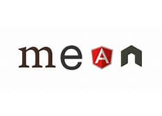
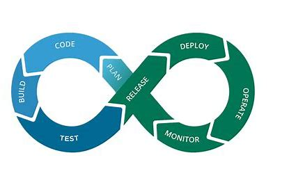

| Most important course for professional: |

MEAN StackMEAN Stack is one of the most popular Technology Stack. It is used to develop a Full Stack Web Application. |

DevOpsDevOps is a set of practices that combines software development and IT operations (Ops). It aims to shorten the systems development life cycle and provide continuous delivery with high software quality. |